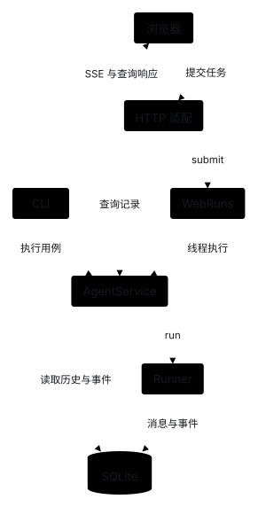
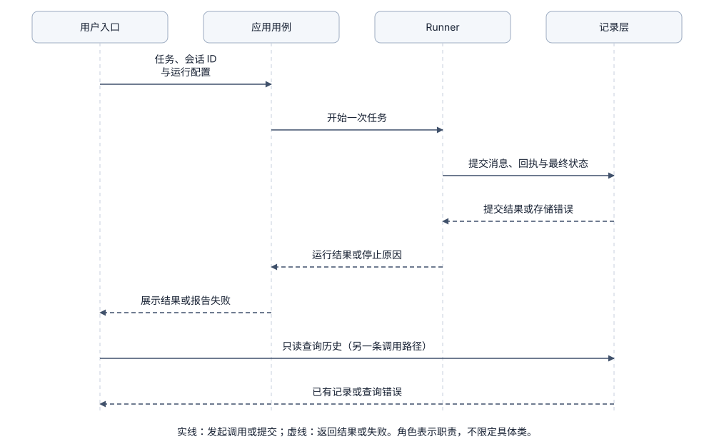
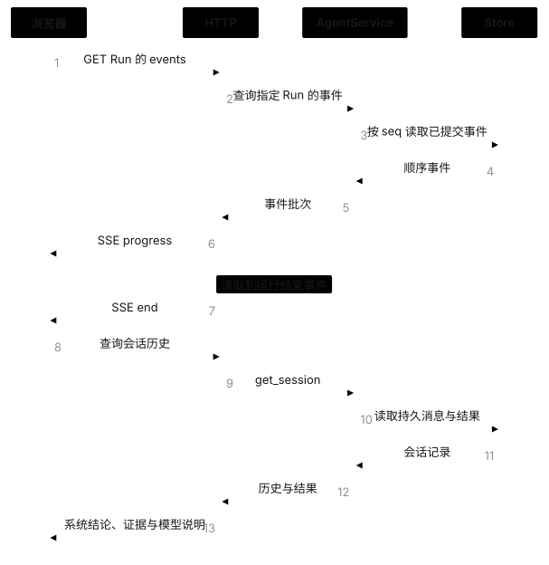

Interfaces：让不同用户入口共用执行流程
1. 问题起点：如何让不同入口共用同一套执行核心？
当系统除了命令行（CLI）还需要提供网页（Web）或 API 入口时，最容易出现的坏味道是“每个入口各自拼装一套工具、权限和循环逻辑”。
期望达到的效果：
- 提交、执行与展示分离：无论是 CLI 还是浏览器发起请求，都经过相同的应用服务配置、权限检查与 Runner 执行流程。
- 入口不掺杂底层协议：前端无需理解模型 SDK 协议，CLI 也不复制 Agent Loop，应用服务统一接收纯业务参数（如会话 ID、任务文本）。
- 真实状态以记录为准：通过存储中的 Run ID 关联执行、历史和进度，不能仅凭前端页面显示判断任务是否真正完成。
下图展示了 CLI 与 Web 共用应用服务的目标结构（当前仅实现 CLI，HTTP / WebRuns 为后续扩展方向）：

2. 模块协作：执行路径与查询路径如何分离？
在多入口架构中，“提交运行”和“查询记录”是两条完全独立的路径：
- 提交运行路径：入口收集用户问题 → 应用服务选定工作目录、工具集与 Policy 配置 → 交由 Runner 控制循环执行 → State 记录层保存真实过程与结果。
- 只读查询路径：入口发起会话列表或历史详情查询 → 直接读取已保存的记录 → 原样展示，绝不触发模型调用或工具执行。
- 错误分层呈现：展示层明确区分“请求参数被拒”“运行过程失败”和“查询记录失败”，绝不能将空结果伪装成执行成功。

初始化与运行期分离：初始化阶段确定组件与权限配置；运行期只传递任务输入、会话 ID、执行结果和错误信息，前端按钮状态不能直接决定工具权限。
3. 核心方案对比：任务在哪里运行、调用方是否等待？
根据任务耗时与部署形态，执行服务有 4 种常见方案（当前采用方案 A，B/C/D 为可选扩展）：
A. 请求内同步执行
- 做法：调用入口一直阻塞等待 Runner 返回最终结果。
- 适用场景：CLI 工具及耗时极短的调用，实现最简单、错误返回最直接。
- 代价与局限：任务运行时长受限于单次请求超时时间，连接断开后难以追踪中间状态。
B. 进程内后台执行
- 做法：接口先立即返回任务 ID，在当前 Web 进程内启动后台任务运行 Runner，客户端通过独立接口查询进度和结果（参考 FastAPI 并发说明）。
- 适用场景：本地单机 Web MVP，代码量少，可避免模型网络等待阻塞 HTTP 事件循环。
- 代价与局限：Web 进程退出或重启时后台任务会直接丢失，且同步阻塞操作无法仅靠取消异步 Task 立即停止。
C. 持久队列与独立 Worker
- 做法：先把提交的任务持久化到存储中，由独立 Worker 进程领取并运行，前端按任务 ID 查询。
- 适用场景：长耗时任务、需要支持服务重启与独立水平扩容的系统。
- 代价与局限：需额外处理任务租约、重复投递、取消信号传递与外部副作用核对（详见 State）。
D. 外部托管 Agent 运行服务
- 做法：CLI 或 Web 直接调用外部完整运行服务，接收任务 ID 与事件流。
- 适用场景：希望复用现成调度基础设施的场景。
- 代价与局限：必须明确会话、权限与历史记录由哪一方作为唯一事实源，避免本地与远端维护两套冲突状态。
4. 进度传输协议如何选择？
Web 进度推送、断线补读与历史查询示意（未来方案）

| 传输方案 | 工作方式 | 适用场景 | 主要实现代价 |
|---|---|---|---|
| HTTP 轮询 | 客户端定时请求任务状态或增量事件 | 低频状态更新、极简客户端 | 存在轮询间隔延迟与无效请求 |
| POST + SSE + GET | POST 提交任务、SSE 单向推流、GET 查历史 | 对话流式展示与工具步骤进度 | 需维护长连接、事件游标与断线补读 |
| WebSocket | 全双工持久消息通道 | 高频双向控制与实时交互 | 需自定义消息协议、心跳与重连状态机 |
关键概念区分：
- SSE 单向事件流：MDN SSE 规范定义了单向事件、事件 ID 与自动重连机制。Web 入口若主要接收进度，使用“普通 POST 提交/取消 + SSE 收进度 + GET 查历史”通常比 WebSocket 更简单清晰。
- 任务步骤进度 vs 模型逐字流式：推送“开始请求模型、工具已返回”等步骤事件，与模型的 Token 级流式输出是两件事；后者还需同步改造 Model 适配器。
5. 开源系统如何组织多入口？
6. 边界处理：断线重连、重复提交与取消
- 断线补读与去重：为每个事件分配递增或固定 ID，客户端记录已读游标；重连后先从持久化记录补读遗漏事件，再按事件 ID 去重，不能只靠前端内存数组保存聊天记录。
- 防止重复提交：网络抖动时用户重发请求，若直接重发普通 POST 会启动第二次重复任务。应支持客户端传入幂等请求 ID（
client_request_id），由服务端做提交去重。 - 诚实表达取消状态：需严格区分“页面关闭”“连接断开”“用户请求取消”与“执行真正停止”。取消接口应先返回“已受理取消请求”，待执行端确认停止后再更新最终状态，UI 绝不能在点击取消瞬间假装后台工具已经停止。
7. 本项目当前实现与未实现范围
8. 期望达到的效果（后续 Web 入口练习）
当后续需要增加 Web 入口时，先让 CLI 与 HTTP 路由共用同一个应用服务，再按以下标准验证：
期望达到的效果：
- 双入口行为一致：从 CLI 和 HTTP 提交相同任务，遵循完全一致的工具集与 Policy 权限限制。
- 查询与刷新零副作用：查询历史或刷新浏览器页面只读取已保存记录，绝不触发新的模型请求或工具执行。
- 断线可补读进度：SSE 连接断开重连后，能根据事件游标补齐缺失步骤，且不会重复渲染同一事件。
- 重复提交不重跑：携带相同客户端请求 ID 重复提交时，服务端直接返回已有任务状态，不会启动第二次运行。
- 取消状态真实可信：发起取消或关闭前端页面后，任务状态如实反映后台执行端是否真正停止，不伪造成功或停止状态。